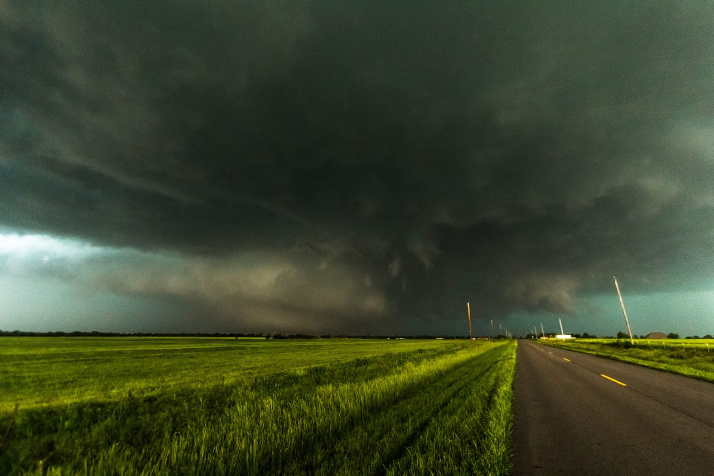

History and context
The path is only part of this story. People were caught on the roads, homes and farms were damaged, and the same evening brought deadly flooding elsewhere. This exhibit keeps the human impact beside the meteorology.
Before the tornado
By midafternoon, a dryline was moving into western Oklahoma while a nearly stationary front crossed the state. Daytime heating left an extremely unstable atmosphere ahead of the dryline and south of the front. Storms formed near the intersection in the late afternoon. As the southern storm moved east into richer moisture and instability, it became tornadic.
Read the accountA storm with more than one scale of motion
The parent supercell formed near a cold front and dryline, with strong atmospheric instability and moderately strong changes in wind with height. The 2015 multiscale study describes both a broad cyclonic tornado and a smaller anticyclonic companion. Understanding the event means examining the surrounding storm as well as the tornado itself.
Read the accountA separate flooding disaster
NWS records 14 flash-flood deaths across Oklahoma during May 31 and June 1. These are separate from the eight El Reno tornado deaths.
Read the accountBefore the funnel: a dangerous environment
The May 31 storm arrived after a destructive period in central Oklahoma. The NWS service assessment treats the earlier May 19 and May 20 events as part of the context for how people responded that evening. A warning is received by people who remember what happened recently, not by an empty landscape.
A slow front met a dryline, a boundary separating much drier air from humid air. The assessment describes very moist surface air, strong to extreme instability and southeasterly inflow near the developing storms. These observations explain why forecasters were concerned before a tornado appeared. They do not specify the future route of an individual vortex.
How the tornado developed near the ground
The early circulation did not simply appear as a finished column beneath the cloud. Bluestein and colleagues used rapid mobile radar observations to examine the development. Their 2019 study finds that the main circulation formed near the ground about 90 seconds before a coherent vortex column developed upward through at least 3.5 kilometers. That vertical development occurred within one radar update of less than 20 seconds. Broader rotation higher in the storm had already been present for several minutes.
Intensification came in bursts. The authors discuss downdrafts and changes in convergence as possible contributors, rather than establishing one complete causal explanation. The vortex could also be strongly tilted while strengthening. These findings matter when interpreting a photograph: a funnel that looks uneven or tilted is not necessarily weakening.
The study covers the formation and early evolution, not every minute of the tornado. Its radar analysis also distinguishes an absence of a clear weak echo hole from an absence of strong rotation. Debris complicates that visual signature. A historical reconstruction needs the measurement context as well as the recognizable shape.
The circulation was larger than one visible funnel
A useful reconstruction has to distinguish the condensation funnel, the larger circulation and smaller vortices moving through it. Wurman and colleagues describe rapidly moving subvortices and very large differences in their motion. A single cone following the center line would hide that complexity.
The path player below shows published center positions. Between those observations, the moving point is an interpolation. The shaded outline describes the whole event footprint. Neither is a measured, second-by-second outline of the visible funnel. Read the linked radar and photographs as observations with their own times and viewing positions.
Smaller vortices inside the larger circulation
A 2018 study by Bluestein and colleagues followed secondary vortices using radar observations two seconds apart. Most of those tracked for at least 15 seconds formed inside the radius of the strongest winds, often behind and to the left of the parent tornado relative to its motion. They moved around the main center and usually dissipated closer to it in the forward quadrants. Some persisted for at least a minute.
The researchers also showed that conclusions about motion relative to the surrounding wind depend on how that larger wind field is represented. Assuming a symmetrical circulation and allowing an asymmetric one gave different interpretations. The small vortices should therefore not be animated as a fixed ring of identical funnels. That would be a design shortcut, not a reconstruction supported by these observations.
What a damaged building can tell us
A photograph records a result. Interpreting it requires knowing what stood there before, how it was built and what connections failed. A collapsed wall in a wide shot does not reveal every foundation connection. This is why the survey account and close photographs matter alongside a dramatic overview.
The mapped survey browser keeps each source feature attached to its own photographs. Select a point, read the reported damage indicator and degree of damage, and then inspect the original attachment. Its map position belongs to the survey feature; it does not automatically identify where the photographer stood. If the source has no photographer or capture time, the exhibit says so.
The local gallery and mapped attachments are separate collections. A caption that says EF3 is a claim about that damage example. It is not a measurement of every wind the storm produced. Likewise, a point outside a familiar drawing of the path cannot be reassigned to El Reno merely because it is nearby.
The NWS captions offer a concrete comparison near Rother Road and SW 15th Street. Photo 3 describes all walls collapsed and assigns EF3. Photo 4 describes large roof sections removed while most walls remained standing and assigns EF2. These are different houses after the event. The captions do not establish identical construction or wind exposure, and the pair is not a before and after sequence.
Connecting marks in fields with a moving vortex
The aerial survey by Wakimoto and colleagues brings three kinds of evidence together: marks left in fields, photographs and video of smaller vortices, and mobile radar observations. In one documented case, a visible vortex was matched to a field swath while its rotational signature was tracked by radar. That is much stronger evidence than drawing a route from a single damage photograph.
This gives the museum a practical standard for future reconstruction. A damage point records an outcome at a place. To show when a particular vortex caused it, we need a justified connection between the ground evidence, the camera and the radar. The current survey explorer does not claim that connection for every building. Its photograph links preserve the source relationships that are actually available.
People, vehicles and the limits of the map
The NWS assessment records all eight direct tornado fatalities in vehicles; four people were storm chasing. It also distinguishes the tornado losses from the later flooding. Those are different events in the same dangerous evening, and combining their totals would obscure what happened.
The remembrance below names the eight people using public records. A name does not require a map pin. We add a place only when a source locates something specific, such as an impact area or a recovery site. Those labels matter because a vehicle can move after it is struck. The map does not infer a person’s final position from a memorial, a roadside marker or a damage photograph.
The current place record is a research-reported vehicle recovery location. The source does not establish the precise place or instant of each occupant’s death. The other fatal incidents remain unmapped here. That is a limit of this exhibit’s verified location evidence, not a suggestion that their histories matter less.
The danger continued after the tornado
The El Reno tornado was part of a wider evening of severe weather. The parent storm produced other tornadoes toward the Oklahoma City area. Repeated storms then brought heavy rain over the same places. NWS records at least 23 rescues from high water and 14 flash flood deaths across Oklahoma during May 31 and June 1. Those flooding deaths are separate from the eight direct El Reno tornado deaths.
This distinction changes how the event should be documented. A regional storm total, a hospital count and an individual tornado record answer different questions. The remembrance here follows the named El Reno tornado victims. A future account of the flooding needs its own locations, chronology and sources instead of adding names to this tornado by association.
How scattered recordings become a reconstruction
The El Reno Survey Project demonstrates how footage can become a scientific record. Seimon and colleagues describe correcting video times against recorded lightning flashes and locating viewpoints using recognizable scene features. That permits observations from separate cameras to be compared with radar at corresponding times.
For this exhibit, a useful image record therefore needs more than a date and a credit. It needs an original source, a defensible time or interval, a viewpoint when known, and an explanation of any correction. An upload time is not a capture time. An eyewitness’s position is not the tornado center. A clear view of the funnel is not a complete view of the wind field.
At present, the original storm photographs are available without assigned timestamps. The radar frames and published camera samples can be explored on the clock. A future historical animation should inherit those distinctions: observed positions, interpolation, inferred form and missing evidence should remain inspectable while it plays.
Questions that deserve an evidence trail
The discussion section is a companion to this account. Each entry names a specific claim, links the public conversation, follows it back to source material and explains what remains unresolved. Agreement among commenters is useful evidence of interest in a question. It cannot substitute for the underlying survey or measurement.
A good contribution can be quite small: identifying a building in an original photograph, locating a missing report, or finding a timestamp correction. Include the source and the reasoning so somebody else can check it. We can then change the relevant passage and its evidence note together, instead of allowing a compelling story to quietly become an established fact.
Reading the documentaries alongside the records
TornadoTRX builds its El Reno documentary around the changing circulation and the people trying to understand and escape it. That makes a useful route into the history. Its English transcript also contains inconsistent spellings of names and detailed claims about conversations, routes and exact intervals. Captions help locate questions to investigate; they do not establish those details on their own.
Pecos Hank provides another route through the event with footage and commentary. The footage notebook below records the limited passages already inspected. Neither an edited film nor its elapsed running time is automatically a continuous storm clock. Matching a scene to the map still requires a location and a defensible historical time.
The Wikipedia article is a useful overview and a way to find further references. Where summaries disagree with a source record, this exhibit keeps the disagreement visible. The reported ending time and the scope of injury totals need that treatment. We do not average conflicting numbers or turn the most repeated number into a new measurement.
BEFORE AND DURING THE STORM
The forecast and warning sequence
Read the operational record as it developed. These seven selected NWS products cover the morning outlook and warnings through 6:28 PM CDT. They are not a complete archive of every warning, watch or update. Original wording may retain preliminary estimates.
4:45 AM CDT
Morning outlook
NWS Norman expected severe storms late in the day, with the greatest tornado potential from 5 to 9 PM. The outlook described a front, dryline, strong instability and increasing wind shear.
Original NWS text, preserved by IEM5:36 PM CDT
First warning for central Canadian County
Issued at 5:36 PM, this warning described a storm capable of producing a tornado near Hinton at 5:33 PM. El Reno was among the named locations.
Original NWS text, preserved by IEM5:50 PM CDT
Warning continued as the storm approached
The 5:50 PM update described the storm near Calumet at 5:46 PM and continued the warning through 6:15 PM. This preceded the documented El Reno tornado formation.
Original NWS text, preserved by IEM6:08 PM CDT
A large tornado reported southwest of El Reno
The 6:08 PM warning described a 6:05 PM observation six miles southwest of El Reno, moving southeast. Spotters and meteorologists were now tracking a large tornado.
Original NWS text, preserved by IEM6:17 PM CDT
The reported motion turns east
Issued at 6:17 PM, the statement located the tornado northwest of Union City at 6:14 PM, moving east at 35 mph. These are operational estimates, separate from the later surveyed path.
Original NWS text, preserved by IEM6:24 PM CDT
The storm continues east of Union City
The 6:24 PM update described a 6:19 PM observation northeast of Union City. It repeated the danger of a tornado obscured by rain.
Original NWS text, preserved by IEM6:28 PM CDT
Tornado emergency wording for communities farther east
Issued at 6:28 PM, the new warning described the tornado southeast of El Reno at 6:23 PM. It named Yukon, Richland, Wiley Post Airport, Bethany and The Village in its tornado emergency wording.
Original NWS text, preserved by IEM
Path and timeline
Follow the tornado's changing course using the published center positions, or read the chronology below. All times here are local daylight time, CDT. Playback begins only when you select Play timeline.
Map controls and reading the path
Drag inside the map to explore, or use the zoom buttons. Scroll outside it to read the page. Keyboard: arrows pan, + and - zoom, Home resets. Select a published time below when points overlap. The outline is the whole event, not an instantaneous funnel.
Optional context, independent of playback time.
NWS tornado outline, center path and time-labeled center positions. The shaded outline covers the event as a whole; it is not the tornado's shape at the selected minute. The marker has no physical size. 39 Time-labeled positions in the NWS file
KML labels are interpreted as PM CDT on May 31 using the accompanying NWS chronology. Between published minutes, the marker moves by linear interpolation in longitude and latitude. This is a display assumption, not an additional observation or a measured second-by-second route. Playback pauses when this tab is hidden.
Where Tim Marshall's camera was
The arrow marker adds published camera locations and directions to the same clock. It is a record of the camera, not a photograph of the tornado at this moment.
Camera evidence and display limits
Credit: El Reno Survey Project; Tim Marshall camera track. Published numerical metadata ↗
A view alongside the timeline
How these images are placed in time
The photographs have no calibrated time or camera position yet. They remain available as context without a guessed place on the clock.
The tornado, in sequence
Each entry links back to the NWS account and to a published map position. The formation precedes the first map point, and the reported ending times disagree.
- 6:03 PM CDT
Formation southwest of town
The tornado formed near Heaston and Reuter roads, initially moving southeast. The map begins with the first published position at 6:04.
- 6:09 PM CDT
An eastward turn
It turned east south of Reno Road and widened as it approached the airport.
- 6:19 PM CDT
Crossing Highway 81
After crossing near Reno Road, it turned north and accelerated.
- 6:24–6:26 PM CDT
Maximum size
The NWS account places maximum size and intensity near Radio and Reuter roads.
- 6:27–6:35 PM CDT
A loop near the interstate
The tornado slowed and looped north of I-40.
- After 6:35 PM CDT
Moving east again
It resumed an eastward track toward Banner Road.
- 6:42 / 6:44 PM CDT
The ending remains inconsistent
The narrative and last map position end at 6:42; the source table and event record give 6:44.
Photographs
Two views by Daniel Rodriguez. Select either photograph for a larger view, its credit and the original file. Neither photograph has been placed at a specific moment on the path.

El Reno tornado, May 31, 2013. Photograph by Daniel Rodriguez.
Daniel Rodriguez · CC BY 2.0Original creator title: El Reno EF-5 Tornado Wedge. The historical title uses EF5; the final NWS damage rating is EF3.
Original creator page and captionReading versions resized and JPEG compressed from the preserved original. Exact historical time and viewing direction are not registered. The camera clock is not used to place this photograph on the map.
Open the preserved full resolution photograph

El Reno tornado, May 31, 2013. Daniel Rodriguez’s original caption places this view approximately north of Banner Road and 15th Street. Exact camera coordinates, bearing and historical time are not established.
Daniel Rodriguez · CC BY 2.0
Original creator title: El Reno EF-5 Tornado. The historical title uses EF5; the final NWS damage rating is EF3.
Original creator page and captionReading versions resized and JPEG compressed from the preserved original. Exact historical time and viewing direction are not registered. The camera clock is not used to place this photograph on the map.
Open the preserved full resolution photographHistorical photographs, separate from the simulator. Some original filenames retain an early EF5 label; the final official damage rating is EF3. Photograph timing and viewing directions remain unregistered.
Damage survey
Read how the aerial survey separated its damage envelope from tornado width.
Browse all nine survey photographs
The nine photographs in the captioned gallery are preserved locally. The mapped photographs load from their original NWS attachment URLs. Source use policy ↗
Remembering the people who died
Direct deaths and injuries in NOAA Storm Events record 453682. These are the published record's figures, not a new estimate of everyone affected. Source revision ncei:2013:20260323.
Injuries includes people hurt; wounded is not an additional category to add. Casualties is an umbrella term for deaths and injuries, so it is not counted again.
Why the reported totals need context
Contemporary reporting also cites 115 people treated by Oklahoma City area hospitals. That is a hospital and regional reporting scope, not a reconciled total for this tornado. Other widely repeated injury figures remain unverified here. Contemporary reporting
Eight lives were lost in the El Reno tornado. We remember them here, together.
El Reno tornado, May 31, 2013. This section does not yet catalogue the separate flash-flood victims.
Rest in peace.
- Dustin Heath Bridges
- Richard Charles Henderson
Age 35, from Hinton. An amateur storm chaser, remembered separately from the three TWISTEX researchers.
- William O’Neal
- Maria Pol Martin
- Rey Chicoj Pol
- Paul Samaras
- Tim Samaras
- Carl Young
Names are transcribed from public NOAA statements, contemporary reporting and an obituary. Early articles contain superseded storm ratings and conflicting ages; their names are used here without repeating those ages or ratings. This is an independently assembled remembrance, not a family-approved or official memorial.
Documented places
The current map identifies one vehicle recovery location. Exact death sites for the eight people have not been established in this exhibit. A memorial location, a recovery location and the place a vehicle was struck are different kinds of evidence.
Questions about El Reno
Why is the official rating EF3?
The final damage survey supports EF3. NWS explains that the strongest radar-observed small vortices did not strike structures that could provide evidence for a higher damage rating. A wide tornado, an intense radar measurement and an EF damage rating describe different things.
Does 2.6 miles describe the visible funnel?
It is the reported maximum tornado width. NWS used radar to help distinguish the tornado from a wider area of damaging downdraft winds. A photograph shows cloud and debris from one viewpoint; its visible dark shape is not a measurement of that entire circulation.
What does the moving point on the map show?
At published minute times, the marker shows an NWS center position. Between those times, it follows a labeled linear interpolation. The line traces the center path, while the shaded outline covers the whole event and does not resize with time. The cyan arrow is a separate recorded camera sample, with its age and evidence limits shown below the map.
Can we see exactly what it looked like at each moment?
Not at each moment. Selected paused footage samples have documented clock correspondences, which can be compared with the map. They do not establish a continuously inspected and registered appearance interval. The two documentary photographs have no assigned historical minute or registered viewing direction. The form study and wind lab are separate illustrations. They do not recreate the recorded El Reno wind field or the damage to individual buildings.
A FIELD GUIDE TO THE RECORD
How to read the footage
A storm can look different from each road. These notes explain what a view can establish, and what needs another kind of evidence.
Community discussions
Have a source or a correction? Include the specific claim and the original record, photograph or video timestamp that supports it.
REMEMBRANCE AND LOCATION RESEARCH
What we can place, and what remains unresolved
All eight named people are remembered above. Only the approximate TWISTEX vehicle recovery location currently has a supported coordinate here. These accounts keep the other five people visible without guessing where they died.
Original chaser footage can help establish vehicle movement. A useful lead includes the original video, exact frame or timestamp, recognizable landmarks, clock calibration and the evidence identifying the vehicle. A recovery location, last sighting and fatal impact are different observations.
Research and reconstruction
An unresolved end time
The NWS narrative ends at 6:42 PM CDT. Its table and NCEI record end at 6:44 PM CDT. The geographic timeline's last label is 6:42. Both reported endings remain in the dossier.
NWS NormanNOAA NCEIRating and appearance answer different questions
The damage rating does not specify the funnel's dimensions or recreate its appearance. Building a scene needs shot-level evidence about viewpoint, visibility and time.
NWS NormanFrom footage to a historical scene
Each shot needs a time, a location and a viewing direction before it can guide the reconstruction. An edited video's timestamp is a place in the film, not automatically a time in the storm.
For Robinson's first two clock samples, the Survey Project provides sparse camera positions and directions for a Vimeo source whose relationship to the selected YouTube upload remains unverified. Read the bounded registration decision and missing evidence. Those samples do not register a continuous historical appearance.
The survey photographs add documented damage. Connecting them to registered camera views is still ahead. For an early look at the visual work, explore the interactive form study. It is an illustration, separate from this historical exhibit.
Pecos Hank's description and available captions read; two paused visual samples are documented in the footage notebook. No continuous video or audio audit. TornadoTRX English caption text was also retrieved and read, with transcription errors and an abrupt ending recorded; no continuous audiovisual audit.
Continuous shot registration, independent clock calibration, complete video review, camera georeferencing, and a historical appearance reconstruction. Discrete registered moments are available in the original-footage viewer. The separate 3D form study is illustrative.
A RECORD THAT CAN BE CHECKED
Corrections and research log
Changes to the exhibit are dated below. Unresolved questions stay visible. A community lead becomes part of the historical account only after its source and interpretation have been checked.
Contribute a source or correction · Dated link audit
The audit records access results, redirects and source roles. An HTTP success is not a finding that a claim is true. Blocked requests remain unresolved, not automatically broken.
Source videos
Organized by storm, reviewed one source at a time.
These are research leads and credited links. Original video titles are preserved, including their authors' rankings and superlatives; those claims have not been adopted as museum findings. Media remains with its creators.
Sources and further reading
The records below support this exhibit. Each note explains what the source contributes. Video review coverage is listed with the videos above; a link does not mean an entire source has been independently verified.
Original photographs and accounts
William T. Hark
Storm Chase May 31, 2013: El Reno, Oklahoma Tornado
Two inspected photographs with separate visual notes and attributed caption times and named places. Their clocks and camera positions remain unregistered; copyright images are linked, not copied.
Official records
NOAA / National Weather Service
Damage Assessment Toolkit survey service
Preserved regional survey records supply the damage map. The exhibit shows 336 points that overlap the published outline, retaining their individual ratings. Event identifiers are blank, so this is a geographic selection, not a verified event join. DAT labels the records preliminary. Exact attachment relationships now link 45 original photographs to 45 selected survey records. Image capture times and individual photographers are not supplied in the retrieved metadata.
NWS Norman
May 31 to June 1, 2013 tornado and flash flooding event
The event account, path chronology, final EF3 rating, maximum reported width and damage photograph captions. Its narrative and summary table give different ending times; both remain visible in this exhibit.
NWS Norman
El Reno final tornado path file (KMZ download)
The original outline, center path and 39 time-labeled positions used by the map. A whole-event outline does not describe the funnel shape at each minute.
NOAA NCEI
Storm Events 2013 data, record 453682 (CSV.gz download)
The preserved March 23, 2026 revision supplies the event record and its direct fatality and injury figures. County-level source records are not necessarily distinct tornadoes.
NWS Norman
The Enhanced Fujita scale
How surveyors use damage indicators and degrees of damage to estimate intensity. The rating alone cannot reconstruct the visible funnel.
Meteorology and reconstruction
Bluestein, Snyder and Houser / Weather and Forecasting (2015)
A Multiscale Overview of the El Reno, Oklahoma, Tornadic Supercell of 31 May 2013
The abstract supports the opening account of the environment and companion tornado. Full methods have not been rechecked for numerical reconstruction in this update.
American Meteorological Society / Monthly Weather Review
Tornadogenesis and Early Tornado Evolution in the El Reno, Oklahoma, Supercell on 31 May 2013
Found through Consensus, then checked against the NOAA-hosted primary PDF abstract and selected opening methods. Supports the formation account. Full figures and the complete analysis have not been audited here.
American Meteorological Society / Monthly Weather Review
The Multiple-Vortex Structure of the El Reno, Oklahoma, Tornado on 31 May 2013
Consensus full abstract record read; publisher metadata checked. Supports the secondary-vortex summary. Direct full-text access failed in this review; no numerical tracks were extracted.
American Meteorological Society / Monthly Weather Review
Aerial Damage Survey of the 2013 El Reno Tornado Combined with Mobile Radar Data
Consensus returned a truncated abstract. Only its complete opening claims support the field-swath, imagery and radar discussion. Publisher full text was unavailable in that earlier abstract review; the unfinished conclusion was not used. Later, on October 1, 2026 UTC, selected NOAA-hosted PDF text on pages 1 to 4 and complete rendered pages 3 and 4 were inspected, including the aerial method and Figures 1 and 2. Other pages and figures remain outside that inspection. The event dossier records the exact PDF identity and copyright limits.
Photographs
Daniel Rodriguez / Wikimedia Commons
El Reno wedge photograph, May 31, 2013
Original photograph, attribution and CC BY 2.0 reuse terms. Its historical filename retains an EF5 label; the final official damage rating is EF3. Exact time and viewpoint are not registered here.
Daniel Rodriguez / Wikimedia Commons
El Reno tornado photograph, May 31, 2013
The second preserved photograph and its CC BY 2.0 attribution. This view has not been synchronized with the map. The creator’s original Flickr caption places the camera approximately north of Banner Road and 15th Street. Exact coordinates, viewing direction and the camera clock remain unregistered.
Remembrance and reporting
NOAA / NWS
NOAA statement remembering three storm researchers
Public identification of Tim Samaras, Paul Samaras and Carl Young. This supports their names in the remembrance section.
FOX6
Breakdown of the storm fatalities in Oklahoma
Contemporary reporting used for named victims and context about regional hospital figures. Early ratings and conflicting ages are not carried into this exhibit.
Tribute Archive
Dustin Bridges obituary
Public obituary used to verify the name Dustin Heath Bridges. No portrait is reproduced.
The Oklahoman / Legacy
William O’Neal obituary
Public obituary used alongside contemporary reporting for William O’Neal. No portrait is reproduced.
EMS World / HMP Global
Language barriers hinder storm warnings in Oklahoma
Contemporary reporting used for Maria Pol Martin and Rey Chicoj Pol. This is a secondary account, separate from the official event totals.
Reconstruction methods
American Meteorological Society
Locating and synchronizing storm imagery
A conference abstract describing the registration of chaser imagery. It guides the proposed method; it does not establish that this exhibit has already registered its photographs or reconstructed the storm.
El Reno Survey Project
Tim Marshall camera samples in the El Reno Survey Project
A preserved 22-sample numerical excerpt supplies UTC times, camera positions and camera 1 azimuth. Seventeen samples fall within the map timeline. No footage or photograph has been matched to these samples here.
Imagery and methods
NOAA / National Weather Service
Published NWRT phased-array radar animation
Original animation for twelve time-linked regional reflectivity frames. Printed filename times are interpreted as UTC, as stated beside the timeline.

Survey research
Timothy P. Marshall and colleagues, AMS conference paper, 2014
Ground-based damage survey and radar analysis of the El Reno, Oklahoma Tornado (PDF)
Selected survey sections support the separate community evidence checks. Review coverage is recorded with those entries.
Research and reconstruction
National Weather Service
May 2013 Oklahoma tornadoes and flash flooding: service assessment
Storm environment, public response and vehicle fatality context. Event overview and storm-chasing sections inspected.
Wurman, Kosiba, Robinson and Marshall, 2014
The Role of Multiple-Vortex Tornado Structure in Causing Storm Researcher Fatalities
Recovery-site coordinates and the distinction between circulation boundaries. Indexed selected passages checked; figures not inspected.
Seimon and colleagues, 2016
Crowdsourcing the El Reno 2013 Tornado
Methods for video time correction and georeferencing, checked in indexed primary-source passages.
Geography and imagery
USGS The National Map
Modern topographic reference map
Current roads, names and terrain for orientation. These layers are not historical evidence of the landscape in 2013.
Scott Bachmeier / UW–Madison CIMSS
Before and after satellite comparison
The June 2 update compares May 14 and June 2 Terra MODIS imagery at 250-meter source resolution. The old article retains an early EF5 label; it is not the source of the final official rating here.
University of Wisconsin-Madison SSEC
SSEC image use terms
Noncommercial image reuse with the required attribution. These images are excluded from the repository code license.
Community research leads
Stormtrack participants
El Reno vehicle discussion
First page and firsthand replies inspected. Clock alignment and vehicle identities are contested. Original videos have not been fully reviewed here; this does not establish a named fatality coordinate.
Reddit community
Footage from behind TWISTEX
A route to attributed original footage, not independently verified movement or a death-site coordinate. Post discussion inspected; full video not reviewed.
r/tornado contributors
Request for synchronized tornado footage
Anecdotal reader interest in comparing the same event through multiple views. This is a design lead, not evidence of historical timing or a representative visitor survey.
Original footage and registration
Dan Robinson / Storm Highway
Original El Reno dashcam sequence
Original creator upload and visible CDT clock, checked at discrete paused moments. The video is linked to the historical clock only at those observations. No continuous synchronization, camera-coordinate reconstruction or independent GPS audit is claimed.
El Reno Survey Project
Field recording and georeferencing guidance
Accurate clocks, landmarks, location records and camera geometry explain what makes a view useful for registration.
Remembrance
The Oklahoman / Legacy, June 5, 2013
Richard Henderson obituary
Full name, age 35, Hinton background and date of death. This does not locate the fatal incident.
Found an error or have a source to add? Send a correction with the passage and its source. The exhibit data also keeps the source revisions and unresolved questions available for inspection.
Back to the overview ↑